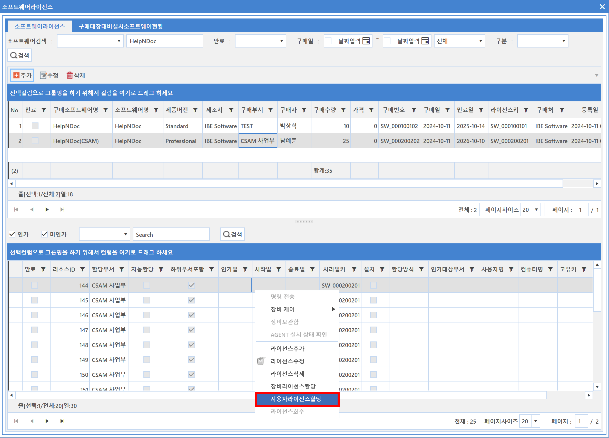
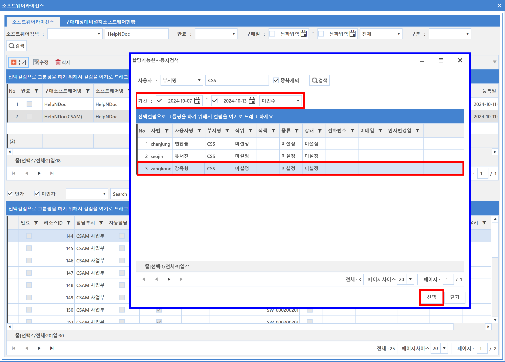
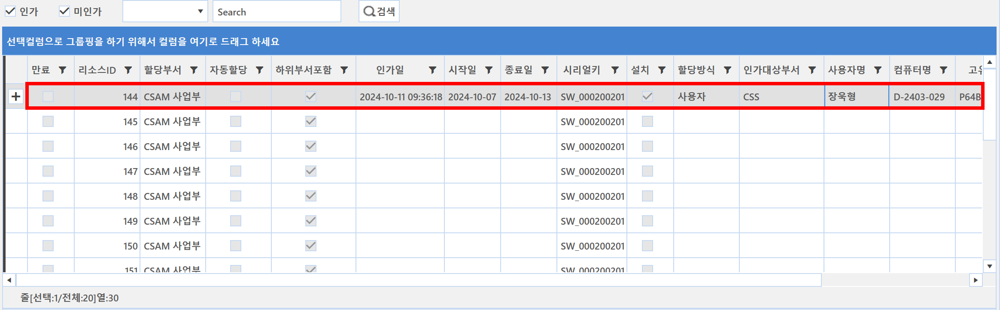
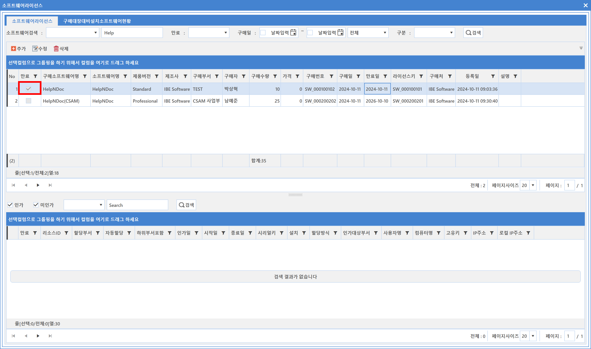

5-1-1-3. 소프트웨어 라이선스 할당/회수
5-1-1-3. 소프트웨어 라이선스 할당/회수
Source: https://www.sweeper.or.kr/etc/manual/5113.html
5-1-1-3. 소프트웨어 라이선스 할당/회수
5. 소프트웨어 ›› 5-1. 자산관리 ›› 5-1-1. 라이선스 ››


생성된 리소스화면에서 "우클릭 명령"으로 "장비"나 "사용자"에게 라이선스를 할당할 수 있습니다. 또한 회수도 가능합니다.
라이선스 할당
소프트웨어 설정 창에서 라이선스를 할당(장비/사용자)할 수 있습니다.
-
장비 라이선스 할당
-
리소스 우클릭 (장비 라이선스 할당)

-
장비 선택
-
기간을 지정할 수 있습니다. (종료일 이후 라이선스가 자동 회수됩니다.)

-
확인
-
할당방식에서 장비에 할당했음을 확인할 수 있습니다.

-
사용자 라이선스 할당
-
리소스 우클릭 (사용자 라이선스 할당)

-
사용자 선택
-
기간을 지정할 수 있습니다. (종료일 이후 라이선스가 자동 회수됩니다.)

-
확인
-
할당방식에서 사용자에 할당했음을 확인할 수 있습니다.

-
라이선스 회수
-
해당 리소스 우클릭(라이선스 회수 선택)

- 회수 확인

참고사항 1
라이선스 구매 등록시 라이선스 만료일을 입력한 경우, 해당 만료일이 되면 만료에 체크가 되면서 라이선스는 자동 회수 됩니다.

© Copyright SWeeper Inc.. All Rights Reserved